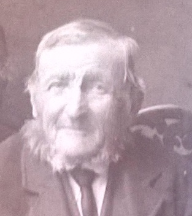
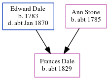

William Dale c1825 - c1910
[ Home ] | [ Calendar ] | [ Surnames Index ] | [ Errors ] | [ Family History ]The child of Edward Dale and Ann Stone, William Dale, the four times great-uncle of Nigel Horne, was born in Chartham, Kent, England c. 18251,2,3, was baptised there at St Mary on 5 Jun 1825 was married twice - to Charlotte Bolding Susan Lenone (on 23 Oct 1870 in Chartham)5. He had 7 children: Rosanna, Stephen and Bertha with Susan; and Elizabeth Ann, Thomas Henry and George with Charlotte, and one surviving child. Like his father, he was an agricultural labourer.
During his life, he was living in Chartham Hatch, Kent, England on 30 Mar 18511 (the same place as his father had been living on 6 Jun 1841); at Heath Farm Cottages, Canterbury, Kent on 7 Apr 18612; at Parish Road in Chartham on 2 Apr 18716; at Court Lodge Farm in Chartham on 3 Apr 18813; and at The Lees, Chilham, Kent on 31 Mar 19017.
He died c. Aug 1910 in East Ashford, Kent, England4.
Parents
- Edward was born in 1783
- Ann was born c. 1785
Children
- Elizabeth Ann was born c. Nov 1851
- Thomas Henry was born on 17 Apr 1854
- George was born c. 1859
- Rosanna was born in 1862
- Stephen was born c. 1871
- Bertha was born in 1875
Citations
- 1851 England, Wales & Scotland Census - Findmypast (was age 26 and the head of the household)
- 1861 England, Wales & Scotland Census - Findmypast (was age 36 and the head of the household)
- 1881 England, Wales & Scotland Census - Findmypast (was age 56 and the head of the household)
- England & Wales deaths 1837-2007 - Findmypast
- Kent Marriages And Banns - Findmypast
- 1871 England, Wales & Scotland Census - Findmypast (was age 45 and the head of the household)
- 1901 England, Wales & Scotland Census - Findmypast (was age 75 and the head of the household)
Media
George Dale

1851 England, Wales & Scotland Census - GBC/1851/0005785567
1861 England, Wales & Scotland Census - GBC/1861/0003428296
Kent Baptisms - GBPRS/CANT/B/96192155
England Births & Baptisms 1538-1975 - R_885422476
Kent, Canterbury Archdeaconry marriages - GBPRS/CANT/M/97074814/1
Kent marriages and banns - GBPRS/CANT/M/94047820/1
England Marriages 1538-1973 - R_848404463
1871 England, Wales & Scotland Census - GBC/1871/0014163785
1881 England, Wales & Scotland Census - GBC/1881/0004706502
1901 England, Wales & Scotland Census - GBC/1901/0005458720
Family Tree
Map
Generated by ged2site. Last updated on Jul 3, 2024
Known Issues
Census information missing between Census UK 1881 and Census UK 1901